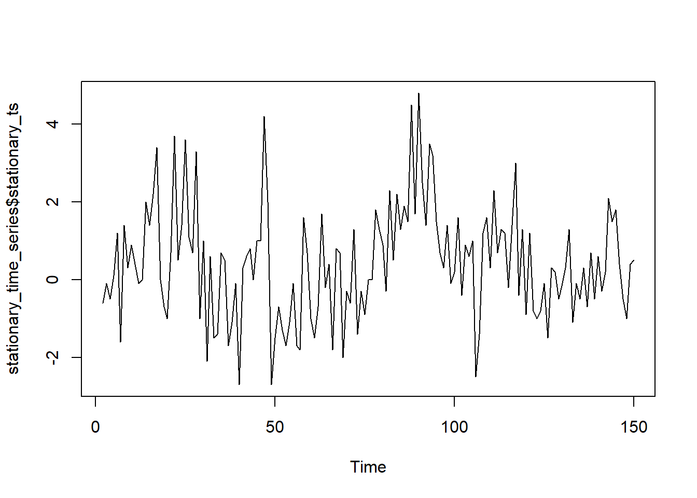

Making Time Series Stationary Made Easy with auto_stationarize()
rtip
healthyrts
timeseries
Author
Steven P. Sanderson II, MPH
Published
October 18, 2023
Introduction
When working with time series data, one common challenge is dealing with non-stationary data. Non-stationary time series can be a headache for analysts, but fear not, because we have a handy tool to make your life easier. Say hello to the auto_stationarize() function from the {healthyR.ts} package.
What’s in the Box?
Before we get into the nitty-gritty of how this function works, let’s take a look at its syntax:
auto_stationarize(.time_series)
The .time_series parameter should be a vector or a time series object. This function’s primary goal is to attempt to stationarize your time series data. But what does that mean, and why is it important?
Stationarity: The Why and the How
Stationarity is a crucial concept in time series analysis. A stationary time series is one whose statistical properties, like mean, variance, and autocorrelation, don’t change over time. Dealing with stationary data is much simpler because many time series models assume stationarity.
Now, here’s the magic of auto_stationarize(): it automatically handles stationarity for you.
The Swiss Army Knife of Time Series
This function is like a Swiss Army knife for your time series data. It checks if your data is already stationary using the Augmented Dickey-Fuller test. If it is, great, you get your original time series back.
But what if it’s not? Well, that’s where the real fun begins.
Transformations Galore
If your time series isn’t stationary, auto_stationarize() goes the extra mile to make it so. It attempts a series of transformations until it succeeds. Here’s the process:
Augmented Dickey-Fuller Test: First, the function runs the Augmented Dickey-Fuller test to determine if your time series is stationary. If it’s already stationary, you’re done.
Logarithmic Transformation: If the test suggests your data isn’t stationary, the function tries a logarithmic transformation. This transformation can be helpful when dealing with data that grows exponentially over time.
Differencing: If logarithmic transformation doesn’t do the trick, the function resorts to differencing. Differencing involves subtracting each value from its previous value, effectively converting your data into the change between time periods.
What You Get
If auto_stationarize() succeeds in making your data stationary, it returns a list with two valuable elements:
stationary_ts: This is your shiny, new stationary time series, ready for analysis.
ndiffs: This little number tells you the order of differencing applied to make your data stationary. It’s a useful piece of information if you need to understand how your data was transformed.
The function attempted to stationarize the BJsales data set, let’s take a visuali look at it before and after, we will also use the adf_test() function on it before and after.
The time series is not stationary. Attempting to make it stationary...
Differencing of order 1 made the time series stationary.
plot(stationary_time_series$stationary_ts)

Try It Yourself
The best way to grasp the power of auto_stationarize() is by trying it yourself. Install the {healthyR.ts} package, load your time series data, and give it a whirl. The ease and simplicity of making your time series stationary with just one function call will leave you impressed.
Conclusion
In the world of time series analysis, making your data stationary is a crucial step. The auto_stationarize() function from the {healthyR.ts} package takes the headache out of this process. Whether you’re dealing with financial data, weather patterns, or any other time series, this function is your trusty companion.
So, what are you waiting for? Transform your non-stationary time series into a stationary one with ease, thanks to auto_stationarize(). Your future self will thank you for it.